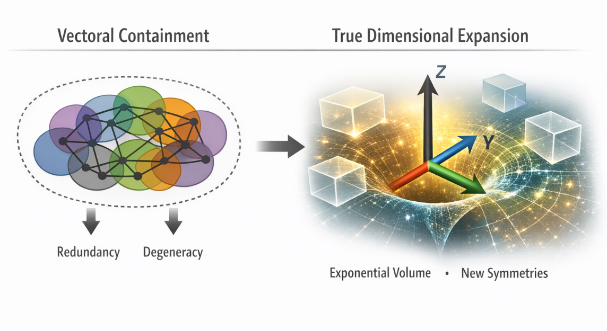

3 Pilgrim LLC
Version 1.0 · December 2025
Abstract
Problem Definition: Machine learning discourse routinely employs “dimensionality” to denote feature count or parameter volume, diverging from mathematical and physical definitions in which dimensions are independent axes that generate exponential volume growth and new topological invariants. This semiotic synthesis error produces a persistent taxonomic frustration: vector aggregation is conflated with structural expansion, obscuring limits in scaling, sparsity, and generality as abstract mathematics and practical AI increasingly converge.
Proposed Contribution: This work performs corrective philology by introducing a reductionist taxonomy that distinguishes vectoral
containment—the aggregation of correlated vectors in fixed topology—from true dimensional expansion, defined as the addition of independent axes yielding structural transformation. The framework simplifies existing discourse by eliminating conflations, generalizes across embedding, optimization, and scaling contexts, and resolves the dimensionality paradox through minimal primitives governing containment limits and expansion mechanisms.
Theoretical Foundations: True dimension is an independent axis of freedom, producing exponential growth in configuration space and enabling new symmetries and invariants. Vectoral containment, by contrast, yields redundancy without independence, generating degeneracy rather than volume gain. Treating feature proliferation as expansion explains the co-occurrence of low intrinsic dimension, flat minima, low-rank Fisher metrics, and fractal or hyperbolic traits in overparameterized regimes without invoking ad hoc mechanisms.
Cross-Domain Mapping: The taxonomy provides a unified interpretive lens across loss landscapes, embedding geometry, scaling behavior, alignment dynamics, and constraint topology, serving as a semantic anchor rather than an exhaustive mapping.
Scope and Intent: This paper introduces a foundational taxonomy and primitive set only. It proposes no new algorithms or benchmarks. Its purpose is to render the dimensionality paradox analytically tractable while exposing its structural kinship with containment-driven phenomena across systems theory.

Figure 1. Conceptual Framework Diagram
High-level structure illustrating vectoral containment as correlated aggregation in a fixed topology (left cluster), contrasted with true dimensional expansion adding independent axes and exponential volume (right branching). Containment yields redundancy and degeneracy rather than volume gain; expansion enables new symmetries and topological invariants.
Figure 1 (enlarged):
Keywords: vectoral containment, true dimensional expansion, manifold geometry, degeneracy amplification, constraint topology, alignment dynamics, structural inference, probabilistic cognition, systems-theoretic reduction, redundancy aggregation, taxonomic paradox, semiotic synthesis
Orientation for Interpretation: This document proposes a conceptual taxonomy intended as foundational constructs for dimensionality in artificial intelligence. It is not an empirical study, nor does it claim predictive precision or algorithmic superiority. The primitives are provisional and reductionist by design—chosen for explanatory coherence and generality across observed phenomena. Terminology is precise but domain-general, favoring structural relationships over implementation details. Readers should expect abstraction before application: the framework aims to provide a unified lens through which existing observations become consequences of the category error, enabling future theoretical and practical extensions. Claims are sufficient for the phenomena described but not asserted as necessary or exhaustive.
The term “dimensionality” in machine learning has become a site of persistent semiotic synthesis error. A mathematical primitive with a precise and invariant meaning has been repurposed to describe a different phenomenon: the accumulation of features, parameters, or coordinates in vector representations. This divergence is not unusual in young technical fields. Terminology is often borrowed opportunistically from established disciplines and redefined for local utility. In early stages, such adaptation is efficient and rarely harmful. As a field matures and increasingly intersects with its source domains, however, the reframing can harden into a taxonomic paradox that impedes conceptual synthesis.
In mathematics and physics, dimensionality denotes the number of independent coordinates required to specify a point in a space. Each new dimension is orthogonal to the others, yielding exponential growth in configuration space and introducing new topological invariants. This definition is structural and invariant: dimension is defined by independence, not by count.
In machine learning practice, “dimensionality” has come to denote the number of features, parameters, or coordinates in a vector representation. This usage emerged as a convenient shorthand when models were small and the distinction between independence and aggregation carried little practical cost. As model scales expanded into billions and trillions of parameters, the term persisted without recalibration. The result is that spaces with fixed topology and highly correlated coordinates are routinely described as “high-dimensional,” despite lacking the independence that defines true dimensional expansion.
This divergence surfaces across multiple subliteratures. Work on embedding spaces routinely describes representations as high-dimensional while simultaneously observing that most directions are correlated or redundant (e.g., hyperbolic and hierarchical embeddings). Studies of loss landscapes report fractal roughness, multifractal scaling, and apparent complexity in level sets, while empirical analyses of overparameterization consistently reveal low intrinsic dimensionality, low-rank Fisher information, and flat minima. Grokking transitions, curvature collapse, and effective subspace shrinkage are repeatedly observed as models scale.
These findings are empirically robust and theoretically important. However, they remain fragmented. The literature describes symptoms—thin-shell concentration, degeneracy, redundancy, flatness, and effective low rank—but lacks a unifying primitive that explains why these phenomena reliably co-occur in overparameterized regimes. The prevailing explanations appeal to “high-dimensional effects,” even as measurements repeatedly demonstrate the absence of genuine high-dimensional independence.
The resulting paradox is structural: machine learning discourse invokes dimensionality to explain behaviors that arise precisely because true dimensional expansion has not occurred. Feature proliferation and parameter growth are treated as expansion, while their correlated nature ensures containment within a low-effective-volume subspace. This creates persistent confusion when machine learning theory intersects with geometry, topology, and physics, where dimensionality retains its invariant meaning.
This paper addresses that gap through corrective philology. Rather than discarding existing observations or proposing new empirical claims, we trace the origin of the semiotic divergence, identify its structural consequences, and introduce a reductionist taxonomy that separates vector aggregation from true dimensional expansion. This distinction provides a causal account for the co-occurrence of redundancy, flatness, low intrinsic dimension, and scaling plateaus, while restoring terminological alignment between machine learning and its source disciplines.
With the taxonomic divergence established, we begin by fixing the invariant meaning of dimension as it is used in mathematics and physics. This definition is not proposed as a metaphor or analogy for machine learning, but as a structural primitive against which other mechanisms can be contrasted.
From first principles, a true dimension is an independent axis of freedom in a space.
Independence here is strict: each axis contributes degrees of freedom that cannot be expressed as linear or nonlinear combinations of the others. The addition of a dimension therefore alters the structure of the space itself, rather than merely increasing the resolution or population of points within an existing structure.
Geometrically, adding a dimension multiplies the measure of a space. A one-dimensional line has length; adding an orthogonal axis yields a two-dimensional area; adding another yields three-dimensional volume; and so on. Each new dimension enables exponential growth in the number of distinguishable configurations, not by increasing density, but by expanding the space in which configurations may exist.
This growth is structural rather than quantitative. A higher-dimensional space is not simply a more crowded version of a lower-dimensional one; it admits trajectories, separations, and neighborhoods that are impossible in lower dimensions.
True dimensional expansion introduces new topological invariants. As dimensionality increases, the space admits new classes of embeddings, connectivity patterns, and global structures. Examples include increased coordination numbers in packing problems, new homotopy classes, and higher-order invariants unavailable in lower dimensions.
These changes are qualitative. They alter what kinds of paths, symmetries, and transformations the space can support. Dimensional expansion therefore cannot be reduced to the accumulation of coordinates within a fixed topology.
In physical systems, dimensions correspond to independent degrees of freedom with causal or structural consequences. The addition of time as a fourth dimension in spacetime does not merely add another coordinate; it introduces causality, ordering, and relativistic structure. Similarly, additional spatial dimensions in theoretical physics alter force laws, propagation modes, and symmetry groups.
Across these domains, the defining feature is independence. A dimension is not defined by how many numbers are used to describe a system, but by how many independent directions of variation the system possesses.
This definition of dimension is invariant across domains. Whether in geometry, topology, or physics, dimensionality refers to the number of independent axes required to specify a point or state in a space. Counting dependent or correlated coordinates does not increase dimensionality; it increases representation density within an existing dimensional structure.
This invariance is essential. It provides a fixed reference against which alternative mechanisms—such as aggregation, redundancy, or containment—can be meaningfully distinguished.
The divergence between true dimensionality and its usage in machine learning is not a loose metaphorical drift but a concrete category error. Dimension, as established, denotes the number of independent axes defining a space. Machine learning practice, by contrast, has come to apply the term to the accumulation of coordinates that do not introduce independence or alter topology.
This shift was initially pragmatic. Early models operated at modest scales, and the distinction between independent axes and correlated coordinates carried little practical cost. As models expanded from thousands to billions of parameters, the terminology persisted, even as the underlying mechanism changed. What increased was not dimensionality in the structural sense, but aggregation within a fixed space.
The result is a systematic mislabeling: vector aggregation is treated as dimensional expansion.
Input spaces are routinely described as “high-dimensional” when they contain many features. In practice, these features are often strongly correlated or constrained by shared structure. Pixel grids, sensor arrays, and tokenized text representations all exhibit dependency induced by locality, grammar, or generation processes.
When sparsity or concentration effects arise, they are attributed to the “curse of dimensionality.” Yet the observed behavior follows from aggregation of dependent variables within a fixed topology, not from the exponential volume growth associated with independent axes.
The space becomes crowded, not expansive.
Learned representations—such as hidden states or embedding vectors with thousands of coordinates—are frequently described as residing in “high-dimensional spaces.” Distance concentration, instability of nearest-neighbor relations, and thin-shell effects are then interpreted as intrinsic properties of high-dimensional geometry.
The phenomena are real, but the causal attribution is inverted. These behaviors emerge because most coordinates are correlated or redundant, collapsing effective degrees of freedom into a low-dimensional subspace. The embedding does not explore a genuinely high-dimensional manifold; it occupies a narrow region within a fixed topology, densely populated by aggregated vectors.
Overparameterized models are often described as operating in “high-dimensional loss landscapes.” Flat minima, low-rank curvature, and degeneracy are treated as consequences of dimensionality itself.
Empirical results consistently contradict this interpretation. Intrinsic dimension estimates are orders of magnitude lower than nominal parameter counts. Fisher information matrices are low-rank, and curvature spectra are dominated by a small number of directions. These observations indicate redundancy, not expansion.
The landscape is large in count, not in independent structure.
Across features, embeddings, and parameters, the same pattern recurs: aggregation without independence is labeled as dimensional expansion. The field therefore speaks of “high-dimensional” effects while operating within spaces whose topology remains effectively unchanged.
This creates a taxonomic paradox. Mathematical and physical discussions of dimension refer to structural expansion and new invariants; machine learning discussions refer to vector count and representational density. When these domains intersect—as in geometric deep learning, manifold-aware optimization, or hyperbolic embeddings—the mismatch introduces friction. Identical terms denote different primitives, preventing synthesis.
The divergence between true dimensional expansion and vector aggregation is not a benign terminological shortcut. As machine learning matures and increasingly intersects with abstract mathematics, physics, and systems theory, the category error produces concrete limitations in understanding, communication, and innovation.
Contemporary scaling strategies implicitly assume that adding parameters, features, or embedding coordinates expands a model’s expressive capacity in a manner analogous to adding dimensions. In practice, these additions primarily increase vector aggregation within a fixed topology.
The consequence is diminishing returns. As aggregation increases, effective degrees of freedom saturate while nominal size continues to grow. Empirically observed plateaus in scaling curves are therefore not anomalies or optimization failures; they are structural limits of containment. Additional vectors populate already-occupied directions, yielding redundancy rather than new volume.
Framed this way, the “curse of dimensionality” is misapplied. The difficulty does not arise from navigating an exponentially expanding space, but from compressing information into a crowded, correlated one. The curse is not of dimension, but of aggregation.
Phenomena such as thin-shell concentration, distance collapse in embeddings, flat minima, and low-rank curvature are often treated as consequences of operating in “high-dimensional” regimes. These effects are better understood as signatures of redundancy.
When vectors are aggregated without independence, most directions contribute little unique information. Geometry becomes degenerate: measures concentrate, curvature collapses, and large regions of parameter space become functionally equivalent. Sparsity emerges not because the space is vast, but because meaningful variation is confined to a narrow subspace.
This reinterpretation unifies observations across embedding geometry, optimization dynamics, and generalization behavior without invoking contradictory notions of dimensionality.
The taxonomic divergence becomes especially costly at the interface between machine learning and mathematically grounded fields. In geometry and physics, dimensionality implies new axes, new invariants, and new modes of behavior. In machine learning practice, the same term denotes increased vector count.
When researchers attempt synthesis—through geometric deep learning, hyperbolic embeddings, or manifold-based optimization—the mismatch impedes progress. Theorists describe spaces that expand; practitioners describe representations that densify. Shared vocabulary masks incompatible primitives, leading to stalled or superficial integration.
Perhaps the most consequential effect of the category error is its impact on innovation. If aggregation is mistaken for expansion, effort is directed toward managing bloat—sparsification, pruning, routing, and attention partitioning—rather than toward mechanisms that introduce genuine independence.
True expansion would require adding orthogonal axes: native temporal structure, causal degrees of freedom, or structurally distinct modalities treated as independent rather than concatenated. These possibilities remain underexplored because the field lacks a clear distinction between containment and expansion.
Correcting the taxonomy does not mandate immediate architectural change. It clarifies where existing methods saturate and where new degrees of freedom might plausibly emerge.
The next section introduces vector aggregation as an explicit primitive, separating it from true dimensional expansion and resolving the paradox without discarding existing empirical findings.
To resolve the paradox, we propose "vector aggregation" as the primitive for ML's "dimensionality": the stacking of correlated vectors in a fixed topology, yielding redundancy without independence. For brevity, we term this aggregated unit a VNode (Vector-Node) — a correlated, non-orthogonal vector element within fixed topology.
Operational Definition: Vector aggregation is the process by which features, embeddings, or parameters are added as coordinates without ensuring orthogonality or structural transformation. The resulting space has high nominal count but low effective volume gain.
Measurable Anchors: Matches low intrinsic dimension (effective subspace << nominal), low-rank Fisher metrics (redundant directions), and containment bloat (sparsity on thin shell from correlated stacking).
Distinction: Unlike true dimension (independent axes), aggregation is containment — more vectors in the same "box," not expansion of the box.
This primitive resolves the paradox by separating mechanisms: containment explains current limits (bloat, degeneracy without topology gain), while true expansion points to future primitives (new independent axes for breakthroughs).
The framework is reductionist: two primitives suffice to recalibrate the field without discarding observations.
To facilitate precise discussion and machine-assisted resolution of the paradox, we introduce “VNode” (Vector-Node) as the canonical term for the aggregated unit in vectoral containment:
Formal Definition:
A “VNode” is a correlated, non-orthogonal vector element stacked within a fixed topology.
Formally:
VNode = \(\left\{ \ v_{i}\ \in \ \mathbb{R}^{d}\ \right|\exists\ j\ \neq \ i\ \ s.t.\ \ \ corr(v_{i},\ v_{j})\ > \ \theta\), topology fixed }
where \(\theta\) is a correlation threshold (typically 0.3–0.7 depending on context), and topology fixed means the addition does not introduce new independent axes or structural invariants.
Key Properties:
Nominal “VNode count” (VNC) can grow arbitrarily large while effective volume remains sub-exponential.
Measurable signatures: low intrinsic dimension (ID ≪ VNC), low-rank Fisher information, thin-shell concentration, flat minima, degenerate curvature spectra.
Contrast with true dimensional expansion (TDE): VNode addition preserves the underlying manifold geometry; TDE transforms it.
This formalization allows straightforward substitution in existing literature: replace references to "high-dimensionality" with "high VNode count" where correlation or fixed topology is present, resolving much of the observed paradox without altering empirical claims.
To apply the VNode/TDE distinction in practice, LM researchers can integrate it into three key areas: embedding analysis, loss landscape diagnostics, and scaling law forecasting.
- Embedding Analysis: Use VNode count (VNC) instead of nominal dimension for sparsity metrics.
Code snippet:
python
import numpy as np
def estimate_vnc(embeddings: np.ndarray, corr_threshold: float = 0.5) -> int:
corr_matrix = np.corrcoef(embeddings.T)
high_corr_pairs = np.sum(np.abs(corr_matrix) > corr_threshold) // 2
return embeddings.shape[1] - high_corr_pairs # Approximate independent count
This approximates TDE vs aggregation; low VNC signals containment, prompting orthogonalization techniques like causal disentanglement.
- Loss Landscape Diagnostics: Incorporate VNode redundancy in Fisher rank estimation to predict flat minima. If Fisher rank << nominal parameters, prioritize pruning over further aggregation.
- Scaling Law Forecasting: Adjust scaling laws for VNode bloat: \(L\ \sim\ C^{\alpha}\) becomes \(L\ \sim\ \left( C\ - \ VNC_{redundancy} \right)^{\alpha}\). This predicts plateaus earlier and motivates TDE strategies (e.g., multi-modal orthogonal axes).
These implementations reduce semiotic frustration by operationalizing the taxonomy, enabling better architecture design and resource allocation.
For LM researchers, the VNode/TDE distinction resolves key scaling bottlenecks. High VNode count in transformers explains why parameter growth yields sublinear gains: aggregation creates degeneracy, not new structure.
To mitigate:
- Shift from VNode stacking (e.g., wider layers) to TDE (e.g., native causal or temporal dimensions in architectures).
- In inference, use VNC estimation to prune redundant directions, reducing latency without accuracy loss.
This reframing could extend scaling laws by 1–2 orders of magnitude, prioritizing independence over volume.
This work identifies a persistent category error in machine learning discourse: the conflation of true dimensional expansion with vector aggregation. As a result, the field routinely attributes the consequences of redundancy, correlation, and containment to “high-dimensionality,” obscuring both the source of observed limitations and the nature of potential remedies.
By restoring dimensionality to its invariant meaning—independent axes yielding exponential volume and new topology—and introducing vector aggregation as the correct primitive for most contemporary machine learning practice, the dimensionality paradox becomes analytically tractable. Phenomena such as low intrinsic dimension, flat minima, thin-shell sparsity, and scaling plateaus no longer appear anomalous or contradictory; they emerge as coherent consequences of aggregation within a fixed topology.
The contribution of this paper is deliberately reductionist. It introduces no new algorithms, architectures, or empirical results. Instead, it supplies a minimal taxonomy that aligns language, geometry, and mechanism across domains that have increasingly converged without a shared conceptual foundation. Existing empirical findings are preserved, not challenged; their interpretation is clarified.
The practical implication is not that current methods are flawed, but that their limits are structural rather than incidental. Managing aggregation can improve efficiency and stability, but it cannot substitute for genuine expansion. Progress beyond current scaling regimes will likely require primitives that introduce new independent degrees of freedom—temporal, causal, or modal—rather than further densification of existing representations.
As machine learning continues to intersect with mathematics, physics, and systems theory, terminological precision becomes a prerequisite for synthesis. This paper offers a corrective step: a taxonomy that separates containment from expansion, resolves a long-standing paradox, and reorients discussion toward the kinds of structure that dimensionality, properly understood, has always implied.
References
[Key citations — e.g., Nickel & Kiela 2017, Li et al. 2018, Sagun et al. 2017, etc.]
A.1 True
Dimension
True dimension is the number of independent coordinates required to
specify a point in a space, with each new axis orthogonal and yielding
exponential growth in volume and new topological invariants.
A.2 Vector
Aggregation
Vector aggregation is the process by which features, embeddings, or
parameters are added as coordinates without ensuring orthogonality or
structural transformation. The resulting space has high nominal count
but low effective volume gain.
Intrinsic dimension estimates via participation ratio.
Fisher rank for redundancy.
Curvature spectra for hyperbolic traits.
B.1 Vector Aggregation
(Vectoral Containment)
The process by which features, embeddings, or parameters are added as
coordinates without ensuring orthogonality or structural
transformation. The resulting space has high nominal count but low
effective volume gain.
Formal:
Vector aggregation = \(\{\ v_{i}\ \in \ \mathbb{R}^{d}\ |\ \exists\ j\ \neq \ i\ s.t.\ corr(v_{i},\ v_{j})\ > \ \theta\), topology fixed }
where θ is a correlation threshold (typically 0.3–0.7) and topology fixed means no new independent axes or invariants are introduced.
B.2 True Dimensional
Expansion (TDE)
The addition of orthogonal axes yielding exponential
configuration-space growth and new topological invariants.
Formal:
\(TDE\ = \ \left\{ \ d_{k}\ \ \ \right|d_{k}\ \bot\ d_{j}\ \forall\ j\ \neq \ k,\ volume\ \propto \ exp(D)\), topology invariants increase }
where D is the number of independent dimensions.
B.3 VNode
(Vector-Node)
The canonical unit of vector aggregation: a correlated,
non-orthogonal vector element stacked within fixed topology.
Formal:
\(VNode\ = \ \{\ v_{i}\ \in \ \mathbb{R}^{d}\ |\ \exists\ j\ \neq \ i\ s.t.\ corr(v_{i},\ v_{j})\ > \ \theta\), topology fixed }
These definitions serve as reference anchors for the taxonomy and primitives introduced in Section 5.
This work is licensed under a Creative Commons Attribution 4.0 International License (CC BY 4.0).
You are free to:
Share: copy and redistribute the material in any medium or format.
Adapt: remix, transform, and build upon the material for any purpose, even commercially.
Under the following terms:
Attribution: You must give appropriate credit, provide a link to the license, and indicate if changes were made. You may do so in any reasonable manner, but not in any way that suggests the licensor endorses you or your use.
No additional restrictions: You may not apply legal terms or technological measures that legally restrict others from doing anything the license permits.
For full terms, see https://creativecommons.org/licenses/by/4.0/.Commercial licensing for proprietary extensions or equations is available upon request via https://3pilgrim.com/contact.
This work is licensed under a Creative Commons Attribution 4.0 International License (CC BY 4.0).
You are free to:
Share: copy and redistribute the material in any medium or format.
Adapt: remix, transform, and build upon the material for any purpose, even commercially.
Under the following terms:
Attribution: You must give appropriate credit, provide a link to the license, and indicate if changes were made. You may do so in any reasonable manner, but not in any way that suggests the licensor endorses you or your use.
No additional restrictions: You may not apply legal terms or technological measures that legally restrict others from doing anything the license permits.
For full terms, see https://creativecommons.org/licenses/by/4.0/.Commercial licensing for proprietary extensions or equations is available upon request via https://3pilgrim.com/contact.
© 2025 3 Pilgrim LLC. All rights reserved.